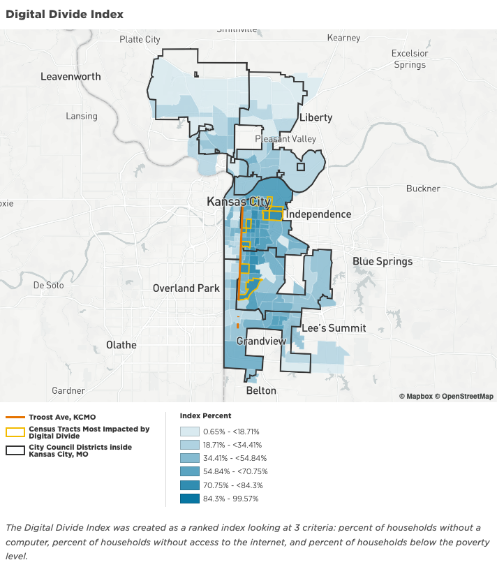
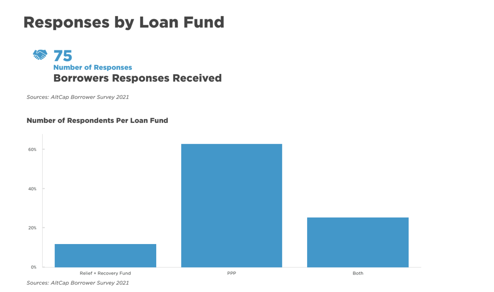
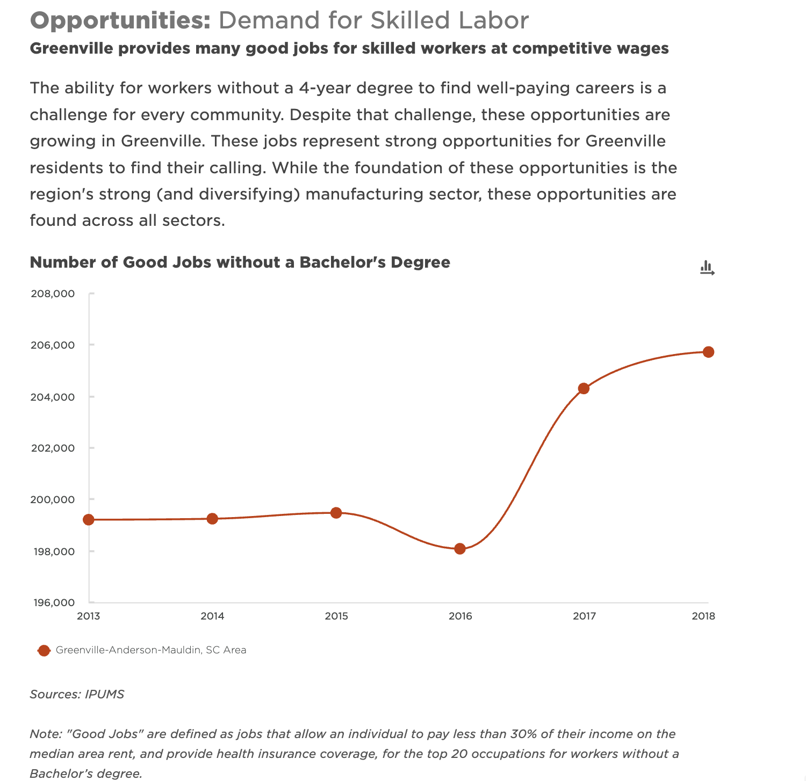
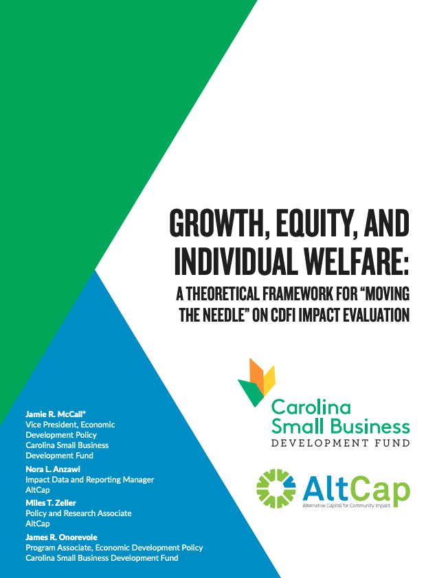

Intro
I am a social entrepreneur focused on providing informed, comprehensive research analysis and data services to underserved communities. I help foundations, non-profits, and consultancies to access, curate, and analyze internal and secondary data to understand socioeconomic trends, support strategic goals, and increase stakeholder engagement.
My passion is to empower the public with sustainable processes, information, and tools they need to achieve their vision.
Services
Data Mining
Data exploration, application of quantitative and qualitative methods, reusable data analysis.
Geospatial Analysis
Harvest and analyze geographic data to uncover spatial patterns, trends, and relationships.
Data Visualization
Creation of static and interactive data visualizations for reports, dashboards, and presentations.
Portfolio
KC Connectivity Report
AltCap Relief & Recovery Fund Report
Greenville, SC Community Insights
KC Streetcar NorthRail Extension Maps
Growth, Equity & Individual Welfare — A CDFI Impact Framework
Contact
Feel free to contact me for any questions. For open source projects, please open an issue or pull request on Github. If you want to follow my work, reach me on Linkedin. Otherwise, send me an email at nanzawi@gmail.com.